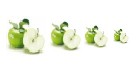
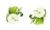

Picture is define via the ImageTexture node.
This tutorial present how to display picture, transform it and optimize resources.
Basically, we display a picture with 2 nodes:
Note:
Picture file is in "src" folder.
Note:
We can use Rectangle shape to
display picture. Result is same than use Bitmap shape.
We can resize texture with :
Warning:
Prefer newSize field of ImageTexture
node if texture size is fixed.
Other resize method increases processing and memory consumption.

When can rotate picture with the rotationAngle field of
Transform2D node.
But arbitrary rotations may not be supported by pictures.
Only 0°, 90°, 180° and 270° angle are supported.
Warning:
Rotation increases processing and memory consumption.
Following example rotate picture to 180°.
Note:
rotationAngle field use radian value.
Another example: Rotation of 90° and -90°

To resize a picture, use the newSize field of
ImageTexture node.
With this field, only resized picture is stored in memory.
To reuse an picture in same VRML scene, use DEF / USE instructions or "cache:" URL.
Example 1: Picture is loaded and stored 2 times.
Example 2: Picture is loaded and stored 1 time.